Special Article
Special Article
Jaffna Monitor hellojaffnamonitor@gmail.com 71 Social Cohesion and the Challenge of Managing a Multi-Ethnic, Plural Sri Lanka Special Article BY: Jeevan Thiagarajah Former Governor Northern Province/ Former Member Commissioner Election Commission. Introduction Socially cohesive societies are better poised for stability and growth, with a general sense of satisfaction and trust in both inter-community and intra-community relations. These characteristics are a scaffolding for a harmonious society and a prerequisite for both economic success as well as a functioning democracy. Social cohesion is an important determinant of a peaceful, democratic and prosperous nation. It creates stronger bonds within and across different groups, and fosters greater trust in the
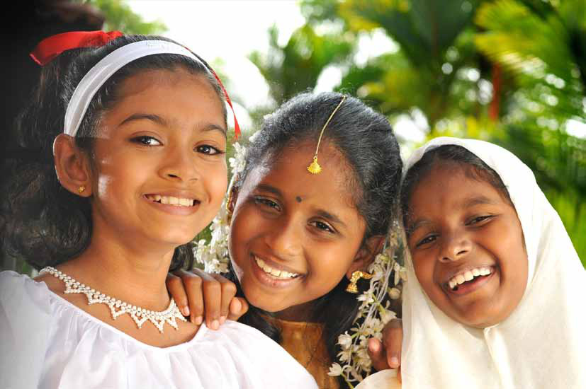

Jaffna Monitor hellojaffnamonitor@gmail.com 72 institutions of government. Reinforcing or promoting social cohesion thus is an integral part of government policy and civil society engagement in countries where multiple identity groups share geographic space. It is even more important where there is a history or current context of conflict, hostility, or mistrust between different identity groups or the state and its citizens as in Sri Lanka.
Targeted population Across the country, poor citizens, the unbanked, landless, differently abled, seeking Access to Justice, threatened due to religious their beliefs, women seeking access to sustainable means to a livelihood, deriving benefits from conflict sensitive development assistance, included in socially cohesive pluralistic communities without discrimination, benefiting from early intervention preventing violent extremism and protected by state aided services. Theory of Change IF communities have increased opportunities to interact meaningfully across divides, including through activities that increase their ability to peacefully conduct livelihoods activities and decrease competition for resources, THEN they will increase inter- group understanding; IF communities have opportunities to address conflict drivers related to access to and management of state services and natural resources, THEN they will be less likely to compete for scarce resources and more likely to live together peacefully. IF communities have an opportunity to share their frustrations and concerns with government officials and other leaders, and if leaders listen and take meaningful action, THEN relationships will improve between communities and leaders, and among leaders. IF formal and informal institutions can efficiently and effectively respond to the needs of society, THEN people will rely on these institutions rather than resorting to violence. IF security and justice institutions protected everyone and enforced laws equitably and protected all human rights, THEN the extent of core grievance would decline. The preamble sets out the logic of aiming for a cohesive society in Sri Lanka. It goes onto pick elements from independence to more recent political recommendations. CEYLON (CONSTITUTION) ORDER IN COUNCIL [AS AMENDED BY THE CEYLON CONSTITUTION (AMENDMENT) ORDER IN COUNCIL, 1947, THE CEYLON CONSTITUTION (AMENDMENT NO. 2) ORDER IN COUNCIL, 1947, THE CEYLON CONSTITUTION (AMENDMENT NO. 3) THE GAZETTE OF THE DEMOCRATIC SOCIALIST REPUBLIC OF SRI LANKA Part II of September 22, 2023 SUPPLEMENT (Issued on 25.09.2023) OFFICE FOR NATIONAL UNITY AND RECONCILIATION Ordered to be published by the Minister of Justice, Prison Affairs and Constitutional Reforms to provide for the establishment of the Office for National Unity and Reconciliation, in order to ensure and promote national unity and reconciliation in Sri Lanka; to set out the powers, duties and functions thereof and to provide for matters connected therewith or incidental thereto Price : Rs. 30.00 Postage : Rs. 150.00 BILL PRINTED AT THE DEPARTMENT OF GOVERNMENT PRINTING, SRI LANKA TO BE PURCHASED AT THE GOVERNMENT PUBLICATIONS BUREAU, COLOMBO 5 This Gazette Supplement can be downloaded from www.documents.gov.lk A
Jaffna Monitor
hellojaffnamonitor@gmail.com
73
ORDER IN COUNCIL, 1947, THE CEYLON
INDEPENDENCE ORDER IN COUNCIL,
1047, AND ACTS NOS. 29 OF 1954, 35 OF
1954, AND 36 OF 1954.]
LEGISLATIVE POWERS AND PROCEDURE
Power of Parliament to make laws.
29.
(1) Subject to the provisions of this Order, Parliament shall have power to make laws for the peace, order and good government of the Island.
(2) No such law shall-
(a) prohibit or restrict the free exercise of any religion ; or
(b) make persons of any community or religion liable to disabilities or restrictions to which persons of other communities or religions are not made liable ; or
(c) confer on persons of any community or religion any privilege or advantage which is not conferred on persons of other communities or religions ; or [ 2, 29 of 1954.]
(d) alter the constitution of any religious body except with the consent of the governing authority of that body, so, however, that in any case where a religious body is incorporated by law, no such alteration shall be made except at the request of the governing authority of that body : 1957- Bandaranaike - Chelvanayagam Pact -Recognition of Tamil as a national language, and that the administrative work of the Northern and Eastern Provinces should be done in Tamil. That the Northern Province is to form one regional area whilst the Eastern Province is to be divided into two or more regional areas. Further provision is to be made in the Bill for two or more regions to collaborate for specific purposes of common interests. The question of M.P.s representing districts falling within regional areas to be eligible to function as chairmen is to be considered. The question of Government Agents being regional commissioners is to be considered. The question of supervisory functions over larger towns, strategic towns and municipalities is to be looked into. Parliament is to delegate powers and to specify them in the Act. It was agreed that regional councils should have powers over specified subjects including agriculture, co-operatives, lands and land development, colonization, education, health, industries and fisheries, housing and social services, electricity, water schemes and roads. Requisite definition of powers will be made in the Bill. It was agreed that in the matter of colonization schemes the powers of the regional councils shall include the power to select allottees to whom lands within their area of authority shall be alienated and also power to select personnel to be employed for work on such schemes. The position regarding the area at present administered by the Gal Oya Board in this matter requires consideration. The Central Government will provide block grants to the regional councils. The principles on which the
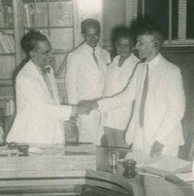
Jaffna Monitor hellojaffnamonitor@gmail.com 74 grants will be computed will be gone into. The regional councils shall have powers of taxation and borrowing. 1965-Dudley Senanayake - Chelvanayakam Pact - Action will be taken early under the Tamil Language Special Provisions Act to make provision of the Tamil Language to be the language of Administration and of Record in the Northern and Eastern Provinces. Mr. Senanayake explained that it was the policy of his party that a Tamil-speaking person should be entitled to transact business in Tamil throughout the island. Mr. Senanayake stated that it was the policy of his party to amend the Language of Courts. Act to provide for legal proceedings in the Northern and Eastern Provinces to be conducted and recorded in Tamil. Action will be taken to establish District Councils in Ceylon vested with powers over subjects to be mutually agreed upon between two leaders. It was agreed, however, that the government should have power under the law to give directions to such councils under the national interest. The Land Development Ordinance will be amended to provide that citizens of Ceylon be entitled to the allotment of land under the Ordinance. Mr. Senanayake further agreed that in the granting of land under colonisation schemes the following priorities be observed in the Northern and Eastern provinces:(a) Land in the Northern and Eastern provinces should in the first instance be granted to landless persons in the district, (b) Secondly, to Tamil- speaking persons resident in the Northern and Eastern provinces, (c) Thirdly, to other citizens in Ceylon, preference being given to Tamil residents in the rest of the island. The Mangala Moonesinghe Parliamentary Select Committee -The so-called ‘Option Paper’ presented to the committee by Mr. Moonesinghe proposed the creation of a Northeast Regional Council with specified powers and a single governor. The regional council was to consist of all members of separate Northern and Eastern Provincial Councils which would sit independently to consider other areas of government. The chief ministers of the respective provinces would alternate as chief minister of the region. While the Option Paper was rejected by the Tamil parties, it was, at least by Sri Lankan standards, a creative attempt to bridge the gap between the various parliamentary parties. The Interim report of the Moonesinghe select committee -The interim report of the parliamentary select committee was released in January 1993. While the report
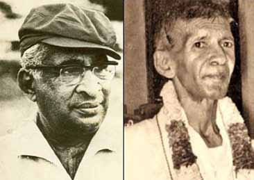
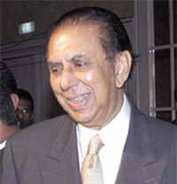
Jaffna Monitor
hellojaffnamonitor@gmail.com
75
was not endorsed by the Tamil parties, it
contained the ‘matters agreed upon by a
majority of members’. These included: 1.
the establishment of two separate units of
administration for the Northern and Eastern
provinces; 2. the adoption of a scheme of
devolution on lines similar to those obtaining
in the Indian constitution (India’s Union
Government retains powers to dissolve state
assemblies, dismiss state governments and
impose presidential rule); 3. The devolution
of more powers in List III (Concurrent List)
of the 13th amendment, or the wholesale
elimination of the List.
The PA Approach -In her address to
the nation on 3 August 1995, President
Kumaratunga declared: ‘The aspiration of
the entire Sri Lankan populace is that the
current national crisis centred around the
north and east be brought to a peaceful,
just and honourable settlement ... The first
task is ... a new approach predicated on
unqualified acceptance of the fact that the
Tamil people have genuine grievances for
which solutions must be found. ‘With this
objective in view, the government is seeking
to rebuild the constitutional foundation of a
plural society within a united and sovereign
Republic of Sri Lanka. This republic will be
a Union of Regions. This exercise is based
on the following principles: An effective
constitutional framework for devolution of
power to regions based on credibility, clarity,
and an internally consistent and coherent
value system, which is capable of effective
implementation and includes structures for
the just resolution of centre-region disputes;
To encourage the regions and communities
which inhabit them to become constructive
partners of a stable and pluralistic
democracy; To ensure that all persons may
fully and effectively exercise all their human
rights and fundamental freedoms without
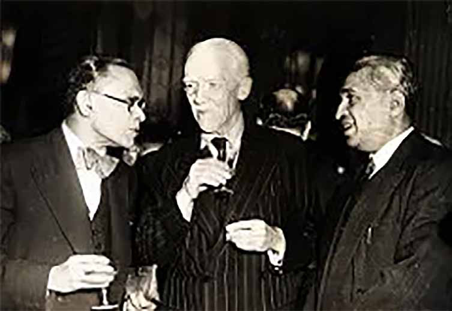
Jaffna Monitor
hellojaffnamonitor@gmail.com
76
any discrimination and in full equality before
the law; To give recognition to Sinhala and
Tamil as official languages, to accord equality
of status to these languages, and to recognize
English as a link language; • To protect the
identity of distinct communities and create
conditions for the promotion of that identity,
including the right to enjoy their own culture,
profess and practice their own religion, and
nurture and promote their own language,
and to transact business with the state in the
national language of their choice.’
The legal draft was discussed in parliamentary
committee for nearly two years, with little
prospect of consensus.
In October 1997, the government took a
unilateral decision to re-publish its provisions,
amended and incorporated in a completely
revised draft constitution. Within this
new format, the 'foremost place' accorded
Buddhism was retained. One constructive
feature of the draft constitution was its
proposal that the powers of an inter-regional
chief ministers’ conference be expanded to
mediate disputes not only within regional
administrations, but also between the regions
and central government. In an attempt to
address concerns about the possible abuse
of the president’s powers to dissolve regional
councils, the draft constitution also proposed
a specially convened tribunal to adjudicate
on the legitimacy of any dissolutions. Such
a tribunal would comprise a presidential
nominee, a nominee of the regional chief
minister concerned and a third member,
jointly selected by the two nominees.
In a dramatic swing away from majoritarian
centralism, the draft constitution granted
the regions veto power over constitutional
amendments affecting either the chapter on
devolution or the two schedules spelling out
regional parameters and the division of powers
between different tiers of government.
All Party Representative Committee
(APRC)-2006 -President Rajapaksa convened
an All Party Representatives Conference to
make recommendations on Constitutional
Reform allowing maximum devolution
enabling “people in their own localities
take charge of the destiny and control their
politico-economic environment and social-
economic advancement without over- reliance
on the Centre”. He also appointed an expert
panel to formulate Constitutional reform
options that would guide the APRC in its
deliberations and recommendations.
Initially twelve members were appointed to
the panel. The membership was later increased
to fifteen and subsequently to seventeen. Of
these eleven endorsed one report described
as the “majority” report (was multi – ethnic
in composition with six Sinhala, four Tamil
and one Muslim representative. All three
women experts too had signed it). Four
others presented another “minority” report.
Jaffna Monitor
hellojaffnamonitor@gmail.com
77
Two others submitted a “dissenting” report
each. The other three reports were signed by
Sinhala persons. While the majority report
was ready to propose maximum devolution
the other reports were not prepared to go that
far. The main issues of contention dividing the
majority report and other dissenting reports
were over matters like maximum devolution
amounting to quasi – federalism, unitary state
and retaining the salient points of the 13th
Constitutional amendment.
The majority report recommended that Sri
Lanka should be known as “Republic of
Sri Lanka” without specifying whether it
should be unitary or federal. The majority
report proposed four different options in
resolving the prickly issue of North – East
linkage. Among other recommendations
were proposals for power sharing at the
centre, resolution of centre-province disputes
and specific measures to ensure territorial
integrity and prevent secession. The majority
report recommended that Local Government
be constitutionally recognized as a tier of
government.
India showed keen interest in the working
of the Expert panel and provided much
documentation including the Sarkaria
Commission report on Centre – State relations
it is known. The APRC had representatives
from the Sri Lanka Freedom Party, United
National Party, Janatha Vimukthi Peramuna,
Jathika Hela Urumaya , Sri Lanka Muslim
Congress, National Unity Alliance,
Ceylon Workers Congress, Mahajana
Eksath Peramuna Lanka Sama Samaja
Party, Communist Party of Sri Lanka, All
Ceylon Muslim League, and Eelam Peoples
Democratic Party. National Muslim Congress,
Up Country People’s Front and Western
Peoples Front (now DPF).
The inability of the Expert panel to define a
framework of fundamental values for resolving
the national problems and present a coherent
set of options in respect of the key issues was a
missed opportunity.
Highlights of the Majority Committee Report:
Sri Lanka will not be defined as unitary or
federal. 2. Every one of the constituent peoples
of Sri Lanka will have the right to internal self-
determination. 3. The Constitution will have a
comprehensive Bill of Rights. Group rights will
be recognized. Section 29(2) of the Soulbury
Constitution will be included. 4. Powers will
be devolved on Provinces which will be the
units of devolution. There will be Provincial
Legislatures and Provincial Governments.
5. Four options have been given with regard
to the issue of the merger of the North
and East to a single Province. One option
is for a permanent merger with internally
autonomous units for Muslim and Sinhala
minorities. Another option is for a temporary
merger with a referendum in the East at the
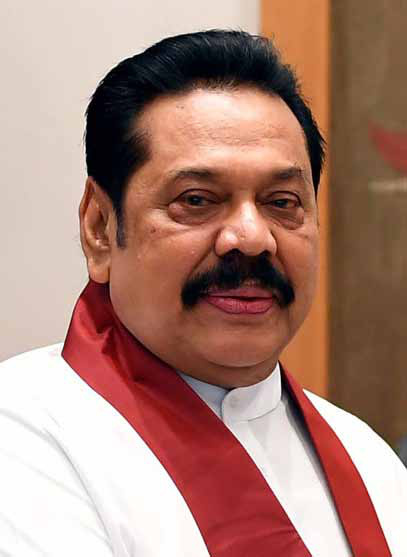
Jaffna Monitor
hellojaffnamonitor@gmail.com
78
end of 10 years. 6. The Tamils of Indian
origin will have an internally autonomous
Zonal Council within the Central Province
and a Cultural Council recognised by the
Constitution. 7. There will be 4 Lists for the
assignment of subjects and functions, namely,
National, Provincial, Concurrent and Local
Authorities. The subjects in the Concurrent
List will be deemed to be Provincial subjects
for the North-East while the other Provinces
will be able to have them as concurrent at the
outset and gradually make claims to convert
them to provincial subjects. 8. Sri Lanka will
have a President and two Vice Presidents,
each belonging to a different community.
9. There will be a Senate with the Senators
elected by the Provincial Legislatures. One of
the Vice Presidents will be the Chairman of
the Senate. 10. Sinhala and Tamil will have
parity of status as the official languages of Sri
Lanka. Sinhala, Tamil and English shall be
the national languages of Sri Lanka. All three
national languages could be the medium
of instruction in schools and in universities.
11. The Provinces will have powers over
state land. 12. The Provinces will have their
own Police Forces. 13. The Provinces will
have substantial fiscal powers, including the
powers to have access to international
finances. 14. The public service will be
restructured so as to make devolution
of powers to be effective. 15. There
will be a Constitutional Court outside
the judicial hierarchy. This Court will
adjudicate on matters of interpretation
of the Constitution, and the legality
of laws before or after enactment. The
Court will also adjudicate on executive
actions of the President.
Conclusions
In the absence of armed civil strife of
the kind seen up to May 2009 there
may be little political incentive for
parties at the centre to recognise and
or go the extent seen in the past as proposals
for accommodation of diverse segments
of society. However, the Foreign Minister
was heard to say in his recent address to
58th UNHRC Session in Geneva, ‘Special
attention has been paid to improving the
socio-economic conditions and address
critical needs such as resettlement, housing,
compensation and infrastructure development
in the conflict-affected Northern and Eastern
Provinces. The Government has been actively
working to develop infrastructure, support
livelihoods and promote industries in the
Northern and Eastern Provinces, aiming to
enhance connectivity and support regional
development. The Government led by
President Anura Kumara Dissanayake is
firmly and sincerely committed to working
towards a unified Sri Lanka that respects
and celebrates the diversity of its people
with no division or discrimination based
on race, religion, class and caste. We will
not leave room for a resurgence of divisive
racism or religious extremism in our country.
Every citizen should feel free to practice
their religion, speak their language, and live
according to their cultural values without fear
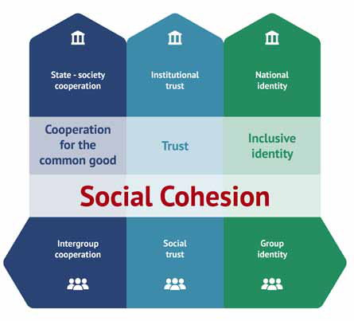
Jaffna Monitor hellojaffnamonitor@gmail.com 79 or discrimination. No one should feel that their beliefs, culture, or political affiliations will make them targets of undue pressure or prejudice. Administrative, political and electoral processes will be activated towards this end. Domestic institutions such as the Office on Missing Persons (OMP), Office for Reparations, and Office for National Unity and Reconciliation (ONUR) will be strengthened. The contours of a truth and reconciliation framework, will be further discussed with the broadest possible cross section of stakeholders, before operationalization to ensure a process that has the trust of all Sri Lankans. Our aim is to make the domestic mechanisms credible and sound within the constitutional framework. This will include strengthening the work towards a truth and reconciliation commission empowered to investigate acts of violence caused by racism and religious extremism that give rise to tensions within Sri Lankan society’. Much of what he has said have echoes with the past. Clearly the need has been long felt extending to beyond our pre independence period. Going forward there is need to ensure we have no recurrence of issues past leading to strife. The Government is well placed at present to set in place measures which prevent relapse of conflict or emergence of extremism. The menu of options drawing from historical narratives on the table to use is rich.
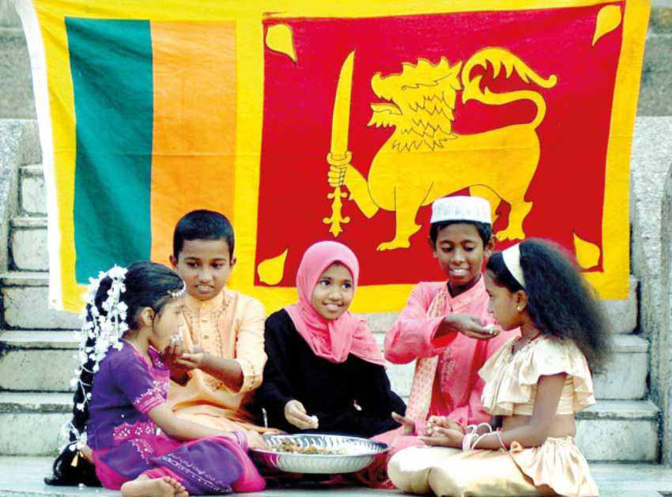
Jaffna Monitor hellojaffnamonitor@gmail.com 80 Story It is a deeply held superstition among the Sri Lankan Tamil diaspora in Europe that an early morning call from Sri Lanka brings news of a death. Therefore, I always went to sleep with my cellphone turned off. Just as we do archanai in temples or conduct witchcraft cleansing in the hope of postponing the death of our loved ones, I developed the belief that turning off the cellphone would prevent death. A year ago, on just one One Way Translated from the original Tamil short story “One Way” by Shobasakthi Translated by: Eḻuttukkiṉiyavaṉ (vOj;Jf;fpdpatd;)
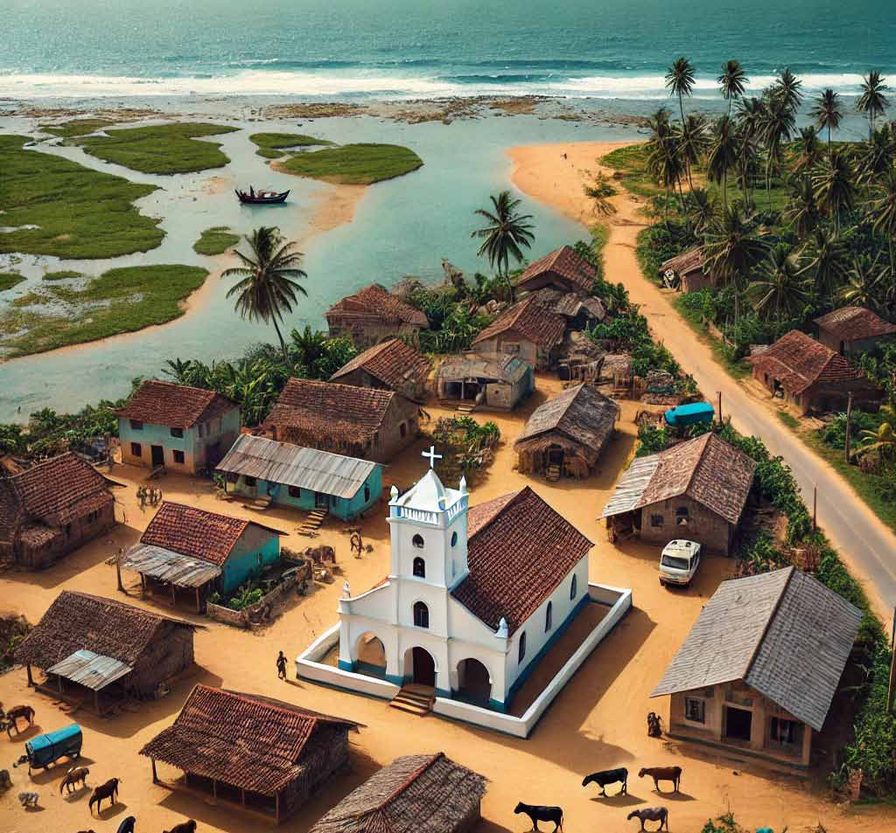
Jaffna Monitor hellojaffnamonitor@gmail.com 81 night, I forgot to turn off my cell phone before I went to bed. At four in the morning, it woke me up with a scream to convey news of appā’s death. Appā was a man of warped thinking. My mother, who was filled to the brim with naivete, was like a hostage caught in the tentacles of a crazed extremist. But if I even frowned at appā or exchanged words with him, my ammā would rush to his defense. She would berate me, claiming that her husband possessed a treasured intellect and fearless bravery. When they got married, appā had taken ammā to see the movie ‘anpē vā.’ During the interval, a young man in the movie theater had smiled at ammā. Since he was in her class till grade 5 – ammā went to school only till grade 5 –, she had smiled back. Noticing this, appā had dragged ammā out of the theater, gave her a thundering slap in the middle of the street, and demanded to know who the man was. If this incident had ended then and there, I would have no need to tell you the story now. But even when he was eighty-one, just a few days before his death, he had slapped her, asking, “Who was it that grinned at you in the theater?” For fifty years, appā had been posing this question to her whenever it crossed his mind. Despite his warped thinking, there is no doubt that he was effective at what he did. He traveled between Jaffna and Colombo for his tobacco brokerage business, slowly but steadily raising the economic status of our family. There were rumors that he engaged in some sort of fraud in his brokerage business. Even some lawsuits found their way to us. He bought a big empty plot of land in the middle of the village, turned it into a luscious coconut grove, and built a house. His first four children were girls. He had frugally saved enough money to marry them off. With his efforts and the natural beauty, they inherited from ammā, my sisters were quickly snapped up by grooms from abroad. My eldest sister Thilakā went to France and arranged a groom for my second elder sister Rōhiṇi. Their entire household was abuzz with celebrations to send her off to France. It was then that I ran away to join a militant group, turning the festive household into looking like a funerary one. My appā never forgave me for this misdeed. When my youngest sister Vēṇi was leaving for France to get married, I was in prison. Vēṇi akkā came with ammā to visit me in Magazine prison before flying out. In those days, I could never even imagine being released from prison. Everyone said I would be sentenced to at least thirty years in prison. Did I not mention appā’s warped thinking? He did not visit me in prison even once. Once in a while ammā traveled from the village to see me, accompanied by some relative or the other. Perhaps it was because of all the vows she made to deities in temple after temple, or perhaps it was because of the endless fasting she suffered through, I was released after seven years. As soon as I was released, my four sisters pooled money to pay for an agent to smuggle me into France. Once I arrived in France, they all told me in unison: “Brother! We paid for your lawsuit for seven years. Now we have even brought you out of the country. We are not going to ask you to pay back all that money. But from now on, taking care of our parents is your responsibility.” I came to France at twenty-seven years of age after souring on the militant movement and the Tamil struggle. While I was in prison, my militant group completely abandoned me. It was my family that protected me and rescued
Jaffna Monitor hellojaffnamonitor@gmail.com 82 me from prison. I resolved to spend the rest of my life for the welfare of my family and began to work hard. Five years after I came to France, I had saved enough money to pay for an agent to bring my parents to France. My sisters were also very keen to bring them over. But my appā, he of warped thinking, refused to move abroad. He declared firmly, “I cannot live a debased refugee life like you all. If you want, you can take your ammā abroad!” There is no need to explain that ammā would never travel alone without appā. It was with the savings intended to bring them that I paid an agent to bring my cousin Sevvanthi to France and married her. That was the only smart thing that I ever did in my entire life. In marriage ceremonies, people vow to never part ‘in sickness and in health’ as a mere formality. But my cousin Sevvanthi has stuck religiously to the letter and spirit of that vow. When appā died some distant relative
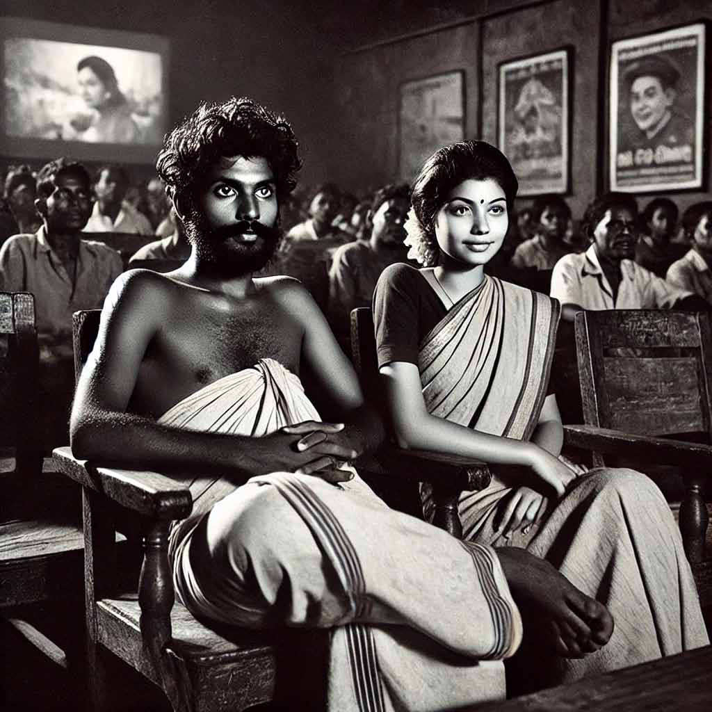
Jaffna Monitor
hellojaffnamonitor@gmail.com
83
had to light his pyre. Those of us who had
the obligation to light his pyre, I and my
sisters, were living as refugees in France.
We no longer had Sri Lankan passports. The
temporary refugee passports given to us by
the French government explicitly said
Jaffna Monitor hellojaffnamonitor@gmail.com 84 war has ended. Ripe old age and ill health has taken over ammā. She takes fifteen different tablets every day. How many more years could she survive the cold and snow in France? Even the banana tree that rejuvenates itself like a Phoenix every time it is cut down, could not survive in France’s climate. The Sri Lankan sun and the life in harmony with nature would give ammā a long life. I found different reasons to be angry, as a defense mechanism to deal with my inferiority complex arising from my inability to do anything for ammā. But ammā was firm in her desire to come to France. I really could not challenge any of the reasons she had for this desire. “Listen carefully son! This village has been a wasteland for years. Snakes and creepy crawlies and rabid dogs rule the roost here. Every house in the village, save barely ten, lies in a dilapidated state. People who escaped the village during the war never returned. There is no one within a half-a-kilometer radius of our house. There is no electricity at night, only occasionally during the day. How can a sick old woman like me live here alone? An old woman who lived on the east street alone like me was strangled to death by burglars. No one knows if they were petty thieves, or people from the Ava group, or army, or navy. There isn’t a huge distance between the east street and the west street, is there? Anything can happen to me at any time.” “Why don’t you go stay with some relatives for some time, ammā?” “Where can I go? Your appā had made enemies of everyone before he departed this world. But it must be said that he never started a fight himself. But even if I went to live with some relatives, do you think they would take good care of me? They would be out to fleece money from me, son! This is not the Sri Lanka you left. Everyone is focused on money from abroad.” “It is difficult to come here now ammā. They have tightened the rules. You have also become old.” “That is no problem. Just last month, Sellaiyā’s wife was taken to Canada by her children. She is two years older than me. She moved around in a wheelchair. I still have strength in both my legs. I draw water from the well all by myself. I collect coconuts from the yard. When rainwater floods into the house, I am the one who empties the water by myself using a coconut shell. I catch a bus to travel to the General Hospital ten miles away. But how much longer can I live alone, son? I have fifteen grandchildren. My corpse would not even burn if I die without touching the face of even one of them. Will you come to light my pyre? My sisters were unanimous in siding with ammā. “Brother! Until now ammā had never asked us for even a single Euro. She did not extravagantly spend the money that we did send but saved it by living frugally. If we cannot fulfill her wish at the evening of her life, we don’t deserve to be her children. Brother… if you are short of money, we will give you money. Don’t worry that you will be burdened with taking care of her once she arrives here. We are her four daughters. We will not let her daughter-in-law bear the burden of taking care of her.” I was angered even more listening to my sisters talk as if I was the one placing roadblocks on ammā’s way to France. Incensed, I started looking for an agent that very day. Kailāsanāthan, who works in the same natural food market as me, came forward
Jaffna Monitor hellojaffnamonitor@gmail.com 85 to help. He introduced me by phone to a friend of his in Colombo who works as an agent for migrants. Even though the agent demanded a large fee, I agreed to it. It was to be a trip by air. I was required to pay half the fee up front and the remaining half once ammā landed in France. I did not want to borrow even a cent from my sisters. I emptied my bank account to pay the deposit. For the rest, we would use Sevvanthi’s jewelry. Within a week of receiving the money, the agent took ammā to Delhi. He prepared an Indian passport she could travel to France on. He craftily inserted her into a group of elderly Indians going on a tour of France. But the airport authorities in Delhi thwarted this trick with an old simple counter trick. They had asked ammā to count from one to ten with her fingers. She had done so by folding finger after finger. Apparently, when Indians count, they open finger after finger, instead of folding them like us. Therefore, the authorities easily concluded that ammā was not Indian. When the agent reluctantly revealed to me over the phone that ammā had been sent to the immigration prison in Delhi, I cursed him out with the choicest obscenities. Just think! An eighty-year-old lady being imprisoned in a country where she did not even speak the local language. Are you not more infuriated than I am! I did not let my sisters know that ammā was in prison. They would not be able to bear this news. All their sorrow will turn into anger at me for making a careless mistake with her travel arrangements. The full force of my anger turned to Kailāsanāthan who had introduced the idiot agent to me. Having volunteered to help me, he was forced into a situation of having had to listen to a mouthful of abuse from me. But that kindhearted man understood my worry and anger and started harrying the idiot agent. Within five days, ammā was released from prison. When she called me on the phone, I could not help weeping. The idiot agent suggested that he could try once again via Mumbai airport. “Forget it! Take ammā safely back to the village,” I said. In that case, he said he could not return the 50% advance he had received. I responded, “That is fine, I don’t want that money back! It is enough for me if you take ammā safely back to Sri Lanka.” The following week, ammā called me on the phone from Sri Lanka. “Son! It looks like it is difficult to travel via India. Now they are showing on TV that people travel to France via Ukraine…” “Ammā! There is a war raging in Ukraine,” I said. “That is ok, son. I have seen enough war in my life! Don’t fret for nothing. They would not do anything to an old woman who could die any day now,” said ammā. She called me every day on WhatsApp to talk. She repeated many times that she could not stay on in Sri Lanka for even a minute more. “What is the point of having money? Groceries are hard to find! People here are going to die of starvation. We are forced to eat the spinach that grows on garbage piles, and the rice paste that the Chinese are donating,” she wailed. How could we children have the heart to eat even a mouthful after listening to a lament like this? I could not focus properly on my work at my natural food market. I kept thinking about ammā. Would she die of her unfulfilled desire to move to France? My head was in turmoil. My Jewish boss noticed my disquiet. He called me over to tell me that there was an order from
Jaffna Monitor hellojaffnamonitor@gmail.com 86 the old lady Olymp and asked me to collect all the items on her grocery list and deliver them. Usually, I would be excited at making a delivery to Olymp. Although I did not have the same excitement this time, the prospect of visiting Olymp did bring some peace of mind. When I joined this Jewish natural food market two years ago, my first job was to take groceries in a cart to Olymp’s house for delivery. Her house was not far away. The old house was on a small plot of land just opposite the tram stop where I usually get off on my way to work. Olymp was born to French-Corsican parents. She was about the same age as my ammā. Like ammā, she, too, lived alone. Although she was of average height, her back was bent, which made her look rather short. She had a dusting of facial hair, and a small bald patch on the top of her head. Old lady Olymp rarely ventured outside her house. She had a degree in psychology. Her house was full of thick hardcover books with black covers. On the very first day I went to her house, the lady looked at me with her gray eyes shining and invited me to come inside her house and sit down. “Handsome young man! Are you Sri Lankan?” “Yes… madame,” I said. Thereafter, every time I went to her house to make a delivery, the old lady told me this story little by little: “Yes son! It was only a few years after the second world war. France was starting to flourish again after being liberated from the Nazis. Our family lived in this house even then. My father had died in the war. My mother had befriended a rough Greek fellow. I was thirteen years old. A Sri Lankan family came from somewhere to settle down in this village. I don’t know if it was a Sinhala family or a Tamil family or a mixed one. There was a young boy in that family, close to my age. He joined our school. At the beginning, he didn’t know a word of French, but could speak a bit of Portuguese, which I could understand somewhat. His name was Thomas. Very quickly I fell in love with that shy, young, brown man. Then this was a tiny village. The woods were full of flowers. Unlike now, there was a lot of water in the river. Horses would graze quietly in the meadows. Thomas and I would play in the woods and on the river. Shall I tell you something interesting? Thomas didn’t even know how to kiss. I taught him that. When my mother found out about our relationship, she scolded me strongly. Her Greek lover beat me brutally. But I did not stop seeing Thomas. But one day, the entire Sri Lankan family disappeared from this village. I could never forget that relationship which lasted barely two months. I harbored the idiotic notion that one day I would travel to Sri Lanka. This old woman does not need to hide that from you, son!” There were many books, pictures, statues, masks, and maps about Sri Lanka in her house. She had read a lot about Sri Lanka from books. She told me that it made her very happy to talk to me. But it did not make my boss very happy that I spent time in Olymp’s house without promptly returning back to the shop after making the delivery. One day, I invited Olymp to my house and served her a variety of Sri Lankan dishes. Even though the spiciness made her eyes
Jaffna Monitor hellojaffnamonitor@gmail.com 87 water, she enjoyed the food and finished it without leaving anything behind on her plate. It was a French habit. “Madame… I will take you to Sri Lanka one day,” I told her frequently. She would smile like a child. Olymp did not know that I myself did not have the ability to visit Sri Lanka. The first question Olymp asked me when I entered her house with my pushcart was, “Is your mother in Sri Lanka well? I read in the newspaper that people had occupied the presidential palace in Colombo, and there were protests and scuffles all over the country. Is there any problem in your village?” I will tell you the truth! The moment Olymp said ‘problem,’ an idea suddenly lit up brightly in my mind. While there was a fierce battle in my mind as to whether I should tell Olymp about this idea, my pitiful tongue spoke up: “Madame, would you be able to do me a
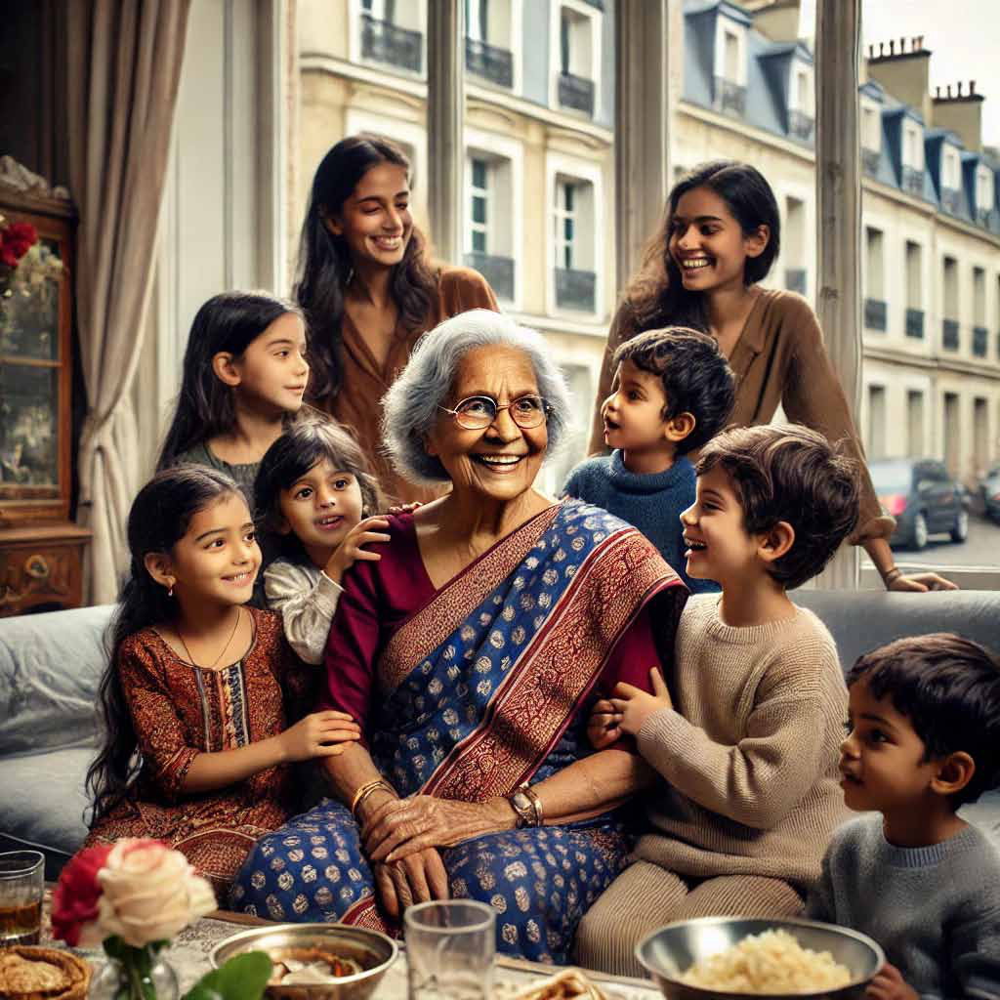
Jaffna Monitor hellojaffnamonitor@gmail.com 88 favor?” “Tell me son! I will definitely help!” “The situation in Sri Lanka is not very good now. Famine is spreading. There is a shortage of medicines, too. I would like to bring my sick mother over to France so that she could live with me for a while, Madame…” “Yes, you should certainly do it, son. How can I help you?” “If you can give my mother a sponsor letter, I think they would issue her a visa…” “Is that all! Just assume that your mother is already here! Tell her to get ready for the trip. I will go to the town council office right this minute to start the paperwork and get all the documentation needed for the sponsorship. Come to see me in the evening after work.” I was speechless with gratitude. When she saw my eyes moisten, she came over with a childlike smile to hug me. While I was at work at the market, Olymp called me on the phone from the town council office. She asked me details like ammā’s name, address, and date of birth. I went to her house that evening with a thousand questions racing in my mind. She sat me down at her reading desk and gave me five neatly folded documents. “Listen son! The first document is the approval from the town council for me to invite your mother here on a three-month tourist visa. The second has details of my bank account. The third is a copy of my French national identity card. The fourth is the letter from me to your mother inviting her here as my guest. The fifth is unnecessary… but they told me at the town council that it is the most important one. It is my consent to let the Interior Ministry begin legal proceedings against me if my guest didn’t leave France within three months. If your mother takes these documents to the French embassy in Colombo and submits a visa application, they would definitely grant her a visa. I am very eager to meet your mother. I will come to see her myself!” Each of the five documents had a scribbled signature by Olymp’s shaky hand. Even a scribbled French signature carries weight, does it not! Within ten days of applying for a visa at the French embassy in Colombo, she was granted a three-month visitor visa. When my sisters heard the news, they were exhilarated, and could not stop kissing me over the phone. Thereafter, they started a fierce competition among themselves to decide in whose house ammā was going to live. As usual, my third sister Malar, who is stubborn and never yields an inch, won. While they were rejoicing, my heart was in turmoil. My ammā would definitely have to leave France after three months. She would need to leave her five children and fifteen grandchildren to return alone to Sri Lanka. But I did not have the courage to tell her this. It would certainly spoil her joy at the prospect of finally being able to come to France. I thought I could gently tell her once she arrives in France and convince her to return within three months. There was another possibility. The impending harsh winter, the cooped-up apartment-living here, and the habit of keeping cooked food in the fridge for a week to eat reheated food every day could all make ammā weary enough to want to return to Sri Lanka. Having lived here for twenty years, even my own heart yearns to return to Sri Lanka. If ammā, too, develops such a yearning and chooses to return to Sri Lanka,
Jaffna Monitor hellojaffnamonitor@gmail.com 89 then the problem would be solved amicably. Perhaps she could pass on in peace, and her body would turn to dust in our own village cemetery with the satisfaction of having seen her grandchildren. The third day after ammā’s arrival in France, I took Olymp to Malar akkā’s house. Olymp, who came with a bouquet of mimosa flowers, held ammā’s hand all the time until she left. All four of my sisters were there. Even though they all welcomed Olymp cheerfully, they exchanged glances among them as if to indicate that she was an unwanted guest. One day, ammā told me: “Son! There is no one back home to look after our house and land. Before some neighbor tries to take them over with fake deeds, we should sell the house. It won’t fetch much. In that largely abandoned village, a third of a hectare of land would barely fetch one lakh rupees. A missionary group has been asking to buy the house and land. We should sort out the paperwork to sell them soon.”
Jaffna Monitor
hellojaffnamonitor@gmail.com
90
“Ammā… that was the house we all grew up
in. That is the only identity we have left in Sri
Lanka. Let us leave it be….”
“So, what! None of us are returning to Sri
Lanka. Did your appā gain all that wealth for
thieves to enjoy? Get on with selling it, son.”
I did not imagine that ammā would come to
like France so much. She enjoyed the snow
and cold like a little child. Once when I visited
Malar akkā, she was sitting on the carpet
learning French from her granddaughter.
“Ammā! Don’t sit on the floor… you would be
cold,” I said.
“Chī chī.. I think this cold is just the right
medicine for my maladies. Since I came here,
I have not caught a cold or had a fever… one
should learn the language of the land one
plans to live in, son. That is why I have started
to learn French. Your appā was able to go all
the way to Colombo to succeed in business
because he knew Sinhala,” she said.
Two-and-a-half months had passed since
ammā came to France. Even though she was
based in Malar akkā’s house, she did the
rounds among the homes of the other children,
spending a couple of days in each. In between,
my eldest sister and her family took ammā to
Lourdes. Ammā toured Paris and its suburbs
visiting all the Hindu temples. After going to
the riverbank to play with the grandchildren,
she marveled, “Chchā, what a wonderful
country! Is there even a single bug, or creepy
crawly or snake?” From time to time, she
reminded me that we ought to sell the house
and land in the village.
When barely two weeks were left before
ammā’s visa was to expire, I called my eldest
sister on the phone and said:
“Periyakkā… you are the one to gently tell
ammā that she needs to return to Sri Lanka on
the thirtieth.”
“Thambi.. What crazy talk is this? After all
the trouble we went through to bring her here,
should we send her back? What would this
woman do in Sri Lanka? She will only be alive
for another year or two. Let her live here. You
don’t have to struggle anymore. I will take
care of everything that needs to be done. The
day after the visa expires, I will take her to the
Police to register her as a refugee.”
“Akkā, did I not tell you already? We cannot
do that. If she does not return, Olymp, who
sponsored her, will be in legal jeopardy.”
“Olymp and Polymp! If that old woman wants
money, we can give her some. But we cannot
send ammā back to Sri Lanka.”
“Look here Periyakkā… Olymp did not do it
for money. She did it out of love and the trust
she had in us. She is older than ammā. How
can we put her in a situation where she had
to go to the courts? She might even be sent to
prison..”
“Don’t be crazy, thambi. How many people
come here as sponsored visitors but remain
behind seeking asylum. Has there ever been a
problem? Nothing you fear will come to pass.”
“No Periyakkā… I cannot breach the
confidence Olymp placed in me. Ammā must
return back.”
I called my third sister Malar on the phone.
Before that my eldest sister had called Malar
and apprised her of the situation. True to her
nature, Malar barked at me as soon as I called:
“Is that so! Is that how it is! Let’s see how you
Jaffna Monitor hellojaffnamonitor@gmail.com 91 are going to send my ammā back. I would take her passport right away and burn it,” she said haughtily. “You cannot, Malar akkā… ammā’s passport is with me.” “You have shown your true militant group brain, thambi. This old white woman has become more important to you than our own ammā! Please don’t tell ammā that she has to go back home. She will die of anguish right this minute. Don’t bear that burden! But in the end, I had to bear a burden. For a week, there was no grocery order from Olymp. I did not have the courage to go over to her house to see if everything was all right. Ammā’s visa problem took a heavy toll on me. One day, when I was returning home, I noticed that Olymp’s front door was padlocked from the outside. Flyers that had been stuck into the gaps between the door frame and the door were hanging clumsily. How did I miss noticing this when I saw her house every day from this tram stop? I realized that some sort of guilty conscience had unconsciously entered me; dirty saliva of guilt pooled within my mouth. I spat it out, crossed the street and rang Olymp’s neighbor’s doorbell. I was somewhat familiar with her Italian neighbor. I delivered his groceries, too. The Italian neighbor said that Olymb had had breathing difficulties and was admitted to the Central Hospital. I went back to the tram stop and started waiting for my tram back home. A thousand thoughts materialized within my brain like black ants and started busily running around. On the way home, when the tram stopped at the Central Hospital station, my legs involuntarily got off the tram. I walked as if I had consumed a kilo of narcotics. When I stood listlessly in front of the reception, the receptionist may have mistaken me for a patient. I asked her for Olymp’s room number and walked up the stairs to Olymp’s, without even taking the elevator. The truth was that I was trying to postpone as much as possible the moment I would have to confront Olymp. Olymp was lying on the hospital bed with her eyes closed. There was an oxygen mask covering her face. She looked like a still doll in her knee-length blue hospital gown. When I asked the head nurse about Olymp’s situation, she said mechanically, “This lady’s health has been deteriorating steadily… We cannot say anything with certainty about her health.” I sensed that my soul that had been restless until that point, was gradually calming down. Once again, guilty saliva secreted copiously within my mouth. Until I reached home, I resisted the temptation to spit it out Before I could step into the house, my youngest sister Vēṇi called. I spoke with my mouth full of saliva. She asked, “What is this thambi.. Are you really going to send ammā back home?” I am not sure if she understood what I meant when I responded, “We cannot say anything with certainty.“ For the next four days, I went to the hospital every day without fail to visit Olymp. She lay still like a log, with her eyes closed. Because I went there every day at the same time, the nurse became acquainted with me. When she said no one else came to visit Olymp, I thought of my ammā. My ammā never returned to Sri Lanka.